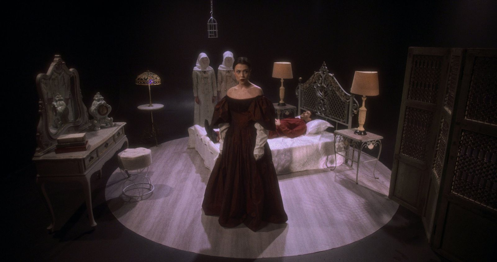
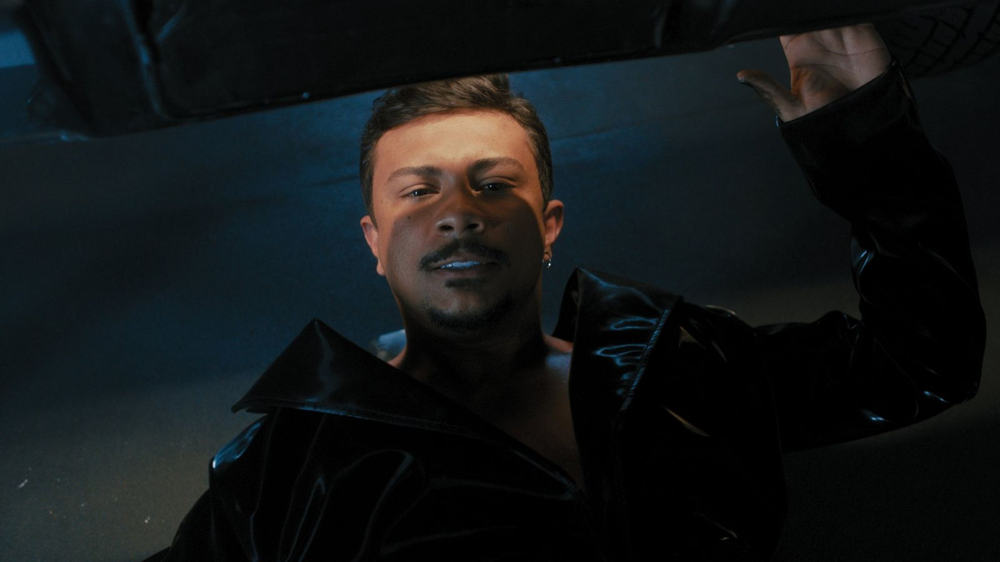
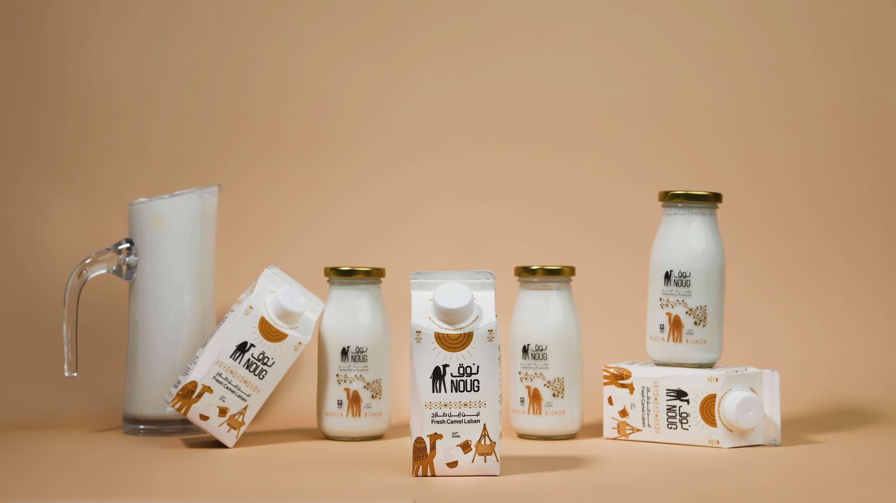
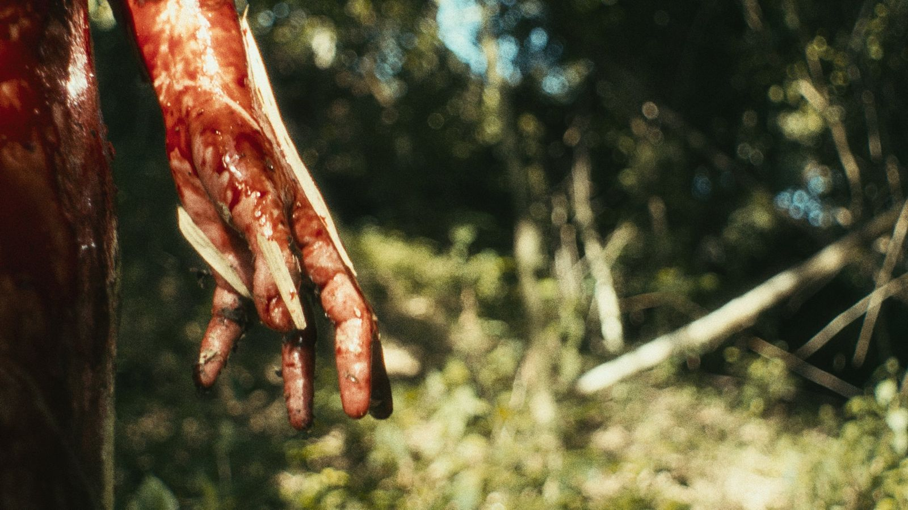
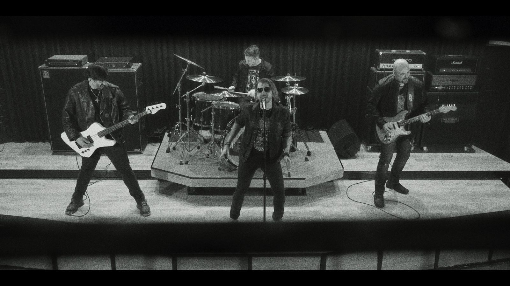
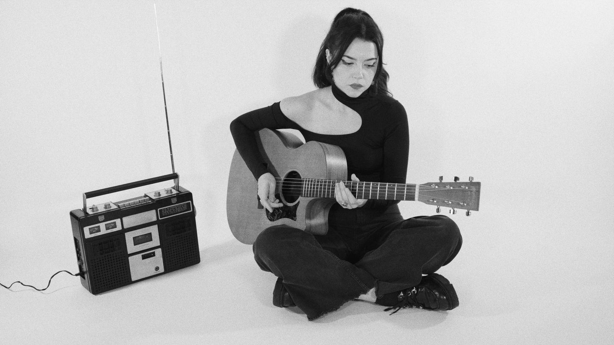
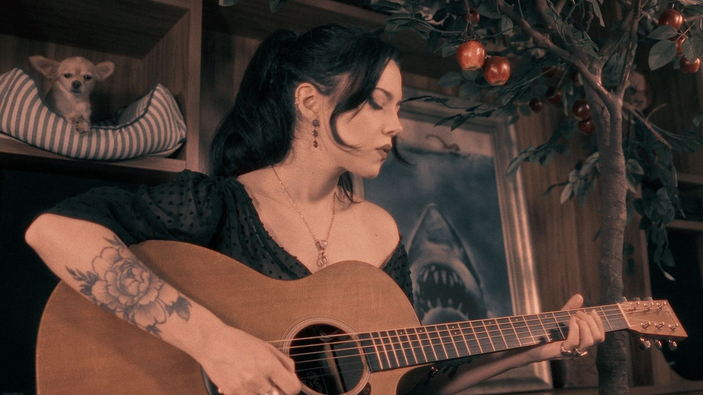

Portfólio

Puto de Luxo
XamãUCEFF
UCEFF
Noug
Noug
Taro / Blood, Milk and Sky
Violet Orlandi
UNISC — Comunidade
UNISC
My Voice for You
SpektraMetagenics
Metagenics
Call Me (Blondie cover)
Violet Orlandi